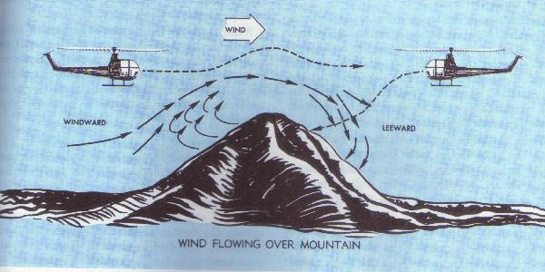

Because of their unique flight characteristics, helicopters are capable of missions other aircraft cannot perform. Helicopter pilots must, however, realize the hazards involved in flying and know what precautions to take that may save their helicopters or even their lives.
General precautionary rules
1. Do not perform acrobatic maneuvers.
2. Do not check magnetos in flight.
3. Use caution when adjusting mixture in flight.
4. Always taxi slowly.
5. Always check ballast prior to flying.
6. Use caution when hovering on the leeward side
of buildings or obstructions.
7. Do not hover at an altitude that will place you in the
shaded area of the height-velocity chart.
8. Always hover for a moment before beginning a new flight.
9. When flying in rough, gusty air, use special care to
maintain proper RPM.
10. When practicing hovering turns, sideward flight, and
similar low airspeed maneuvers, be especially
careful to maintain proper RPM.
11. Always clear the area overhead, ahead, to each side,
and below before entering practice autorotations.
12. Make sure any object placed in the cockpit of a helicopter
is secured to prevent fouling of the controls.
13. Except in sideward or rearward flight, always fly the
helicopter in relationship to references ahead.
Limits of rotor RPM vary with each type of helicopter.
In general, the lower limit is determined primarily by the control
characteristics of the helicopter during autorotation. Since the tail
rotor is driven by the main rotor, a minimum main rotor RPM exists at
which tail rotor thrust is sufficient for proper heading control. Below
this minimum main rotor RPM, full pedal application will not maintain
heading control under certain conditions of flight.
The upper limit for rotor RPM is based on both
autorotative characteristics and structural strength of the rotor
system. Structural tests plus an adequate margin for safety are
required by FAA safety standards for the certification of aircraft.
Extreme attitudes and overcontrolling
Design characteristics of nearly all helicopters
preclude the possibility of safe inverted flight. Avoid all maneuvers
which would place a helicopter in danger of such an extreme attitude.
Avoid loading a helicopter so as to cause an extreme
tail-low attitude when taking off to a hover. Aft center of gravity
is dangerous while hovering and even more dangerous while in flight
because of limited forward cyclic stick effectiveness.
Avoid heavy loading forward of center of gravity.
The result is limited aft cyclic stick effectiveness, which endangers
controllability.
Avoid an extreme nose-low attitude when executing
a normal takeoff. Such an attitude may require more power than the engine
can deliver and will allow the helicopter to settle to the surface in an
unsafe landing attitude. In the event of a forced landing, only a
comparatively level attitude can assure a safe touchdown.
Avoid abrupt application of rearward cyclic control.
The violent backward-pitching action of the rotor disc may cause the
main rotor blades to flex downward into the tail boom.
Avoid large or unnecessary movements of the cyclic
control while at a hover. Such movements of the cyclic control can,
under certain conditions, cause sufficient loss of lift to make the
helicopter settle to the surface.
Flight technique in hot weather
1. Make full use of wind and translational lift.
2. Hover as low as possible and no longer than necessary.
3. Maintain maximum allowable engine RPM.
4. Accelerate very slowly into forward flight.
5. Employ running takeoffs and landings when necessary.
6. Use caution in maximum performance takeoffs and steep approaches.
7. Avoid high rates of descent in all approaches.
Effect of altitude on instrument readings
The thinner air of higher altitudes causes the airspeed indicator to
read "too low". True airspeed may be roughly computed by adding
to the indicated airspeed, 2 percent of indicated airspeed for each 1,000
feet of altitude above sea level. For example, an indicated airspeed of
80 MPH at 5,000 feet will be a true airspeed of approximately 88 MPH.
This computation may be made more accurately by using a computer.
Manifold pressure is reduced approximately 1 inch
for each 1,000 feet of increase in altitude. If a maximum manifold
pressure of 28 inches can be obtained at an elevation of 1,000 feet,
only 22 inches of manifold pressure will be available at 7,000 feet.
This loss of manifold pressure must be considered when planning
flights from low altitudes to high altitudes.
Of three major factors limiting helicopter performance
at high altitudes (gross weight, density altitude, and wind), only gross
weight may be controlled by the pilot of a helicopter that is equipped
with an unsupercharged engine, At the expense of range, smaller amounts
of fuel may be carried to improve performance or to increase the number
of passengers or the amount of baggage. Where practical, running landings
and takeoffs should be used. Make maximum use of favorable wind, with
landings and takeoffs made directly into the wind if possible.
When the wind blows over large obstructions such
as mountain ridges, a condition is set up similar to that depicted in
the upper right portion of figure 81;
however, it is a much more disturbed condition. The wind blowing up the
slope on the windward side is usually relatively smooth. However, on the
leeward side the wind spills rapidly down the slope, similar to the way
water flows down a rough streambed, setting up strong downdrafts and
causing the air to be very turbulent
(fig. 67). The downdrafts can be very violent and may cause aircraft to
strike the sides of the mountains. Therefore, when approaching mountain
ridges against the wind, it is sound practice to make an extra altitude
allowance to assure safe terrain clearance. Where pronounced mountain ridges
and strong winds are present, a clearance of 2,000 or 3,000 feet above the
terrain is considered a desirable minimum. Also, it is advisable to climb to
the crossing altitude well before reaching the mountains to avoid having to
make the climb in a persistent downdraft.

Figure 67.- Windflow over mountains and its effect on
aircraft in flight.
Tall grass and water operations
Tall grass will tend to disperse or absorb the
ground effect. More power will be required to hover, and takeoff may
be very difficult. Before attempting to hover over tall grass, make
sure that at least 2 or 3 inches more manifold pressure is available
than is required to hover over normal terrain.
Operations over water with a smooth or glassy
surface renders accurate altitude determination very difficult. Thus,
caution must be exercised to prevent the helicopter from inadvertently
striking the water. This problem does not exist over rough water, but
a very rough water surface may disperse the ground effect and, thereby,
require more power to hover. Movements of the water surface, wind
ripples, waves, currentflow, or even agitation by the helicopter's
own rotor wash tend to give the pilot a false feeling of helicopter
movement.
Carburetor icing is a frequent cause of engine failure. The vaporization of fuel, combined with the expansion of air as it passes through the carburetor may drop as much as 60° F. within a fraction of a second. Water vapor in the air is "squeezed out" by this cooling, and if the temperature in the carburetor reaches 32° F. or below, the moisture will be deposited as frost or ice inside the carburetor passages. Even a slight accumulation of this deposit will reduce power and may lead to complete engine failure, particularly when the throttle is partly or fully closed.
Conditions favorable for carburetor icing
On dry days, or when the temperature is well below freezing, the moisture in the air is not generally enough to cause trouble. But if the temperature is between 20° F. and 70° F., with visible moisture or high humidity, the pilot should be constantly on the alert for carburetor ice. During low or closed throttle settings, an engine is particularly susceptible to carburetor icing.
Indications of carburetor icing
Indications of carburetor ice include unexplained loss of RPM or manifold pressure, the carburetor air temperature indicating in the "danger" (red arc) or "caution" (yellow arc) range, and engine roughness. A loss of manifold pressure will generally give the first indication; however, due to the many small control (setting) changes made in the throttle and collective pitch, this may be less noticeable. Therefore, a close check of the carburetor air temperature gauge is necessary so that carburetor heat may be adjusted to keep the carburetor air temperature gauge out of the red and yellow arcs.
Carburetor air temperature gauge
Carburetor air temperature gauges are marked with a green arc representing the range of desired operating temperatures; a yellow arc representing the range of temperatures in which caution should be exercised since icing is possible; and a red line representing the maximum operating temperature limit. Sometimes a red arc is used to represent the most dangerous range in which carburetor ice can be anticipated. The carburetor heat control should be adjusted so that the carburetor air temperature remains in the green arc.
The carburetor heater is an anti-icing device that
preheats the air before it reaches the carburetor. This preheating can
be used to melt ice or snow entering the intake duct, to melt ice that
forms in the carburetor passages (provided the accumulation is not too
great), and to keep the fuel mixture above the freezing point to prevent
formation of carburetor ice.
When conditions are favorable for carburetor icing,
the pilot should make the proper check to see if any is present. The
manifold pressure gauge should be checked, then full carburetor heat
applied until it is certain that if ice was present, it has been
removed. (During this check a constant throttle and collective pitch
setting should be maintained.) The carburetor heat should then be
returned to the OFF (cold) position. If manifold pressure gauge indicates
higher than when the check was initiated, carburetor ice was present.
When there are indications of carburetor icing,
full carburetor heat should be applied until the manifold pressure
returns to normal and the engine is running smoothly. The carburetor
heat should then be adjusted so that the carburetor air temperature
gauge indicates a safe operating range.
Fuel injection systems have replaced carburetors
in some helicopters. In the fuel injection system, the fuel is normally
injected into the system either directly into the cylinders or just
ahead of the intake valve. In the carburetor system, fuel enters the
airstream at the throttle valve. The fuel injection system is generally
considered to be less susceptible to icing than the carburetor system.
{kind=link}